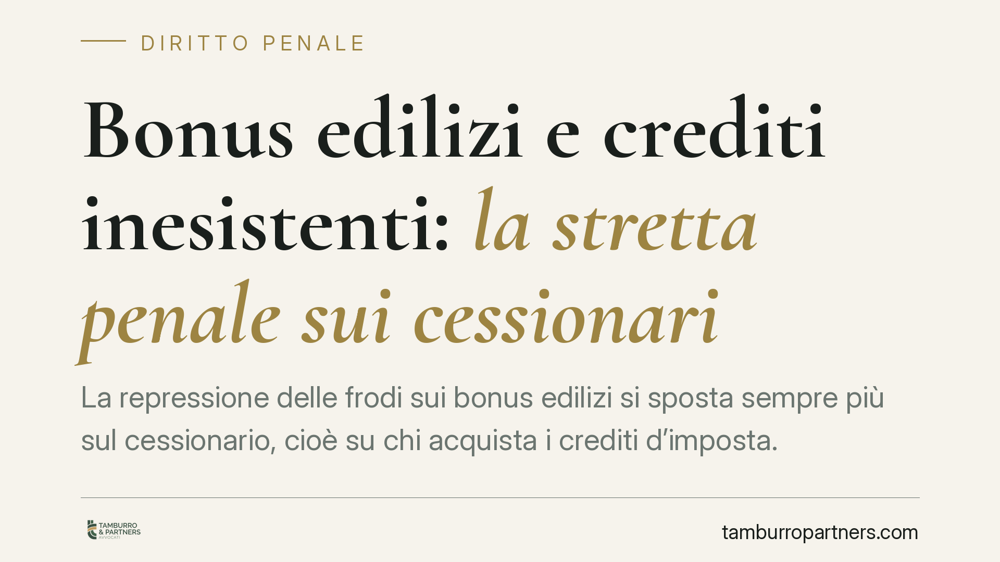

Bonus edilizi e crediti inesistenti: la stretta penale sui cessionari
La repressione delle frodi sui bonus edilizi si sposta sempre più sul cessionario, cioè su chi acquista i crediti d'imposta. L'orientamento della Cassazione tende a qualificare queste condotte come truffa aggravata e a pretendere controlli sostanziali, non solo formali. Con il D.lgs. 87/2024 cambia anche la linea di confine tra crediti inesistenti e non spettanti. Vediamo cosa significa in concreto per imprese e professionisti.

Il contesto
Il meccanismo di cessione del credito introdotto dall'art. 121 del DL 34/2020 ha generato un mercato ampio di crediti fiscali collegati ai bonus edilizi. Dove circola denaro pubblico, circolano anche frodi: crediti costruiti su lavori mai eseguiti, fatturazioni gonfiate, soggetti interposti.
La risposta dell'ordinamento si è progressivamente concentrata su un punto delicato: la posizione di chi acquista il credito. Il cessionario non è più considerato un mero terzo in buona fede, ma un soggetto a cui si richiede un livello di diligenza elevato nella verifica dell'origine del credito acquistato.
Inquadramento normativo
Sul piano penale vengono in rilievo due binari. Il primo è quello della truffa aggravata per il conseguimento di erogazioni pubbliche (artt. 640 e 640-bis c.p.), contestata quando il credito nasce da una rappresentazione artificiosa della realtà. Il secondo è quello dell'indebita compensazione (art. 10-quater del D.lgs. 74/2000), che punisce l'utilizzo in compensazione di crediti non spettanti o inesistenti oltre le soglie di legge.
Secondo l'orientamento della Cassazione, il momento consumativo della frode tende a collocarsi a monte, al perfezionarsi dell'inserimento dei dati nell'anagrafe tributaria, quando cioè il credito fittizio entra nel sistema ed è potenzialmente spendibile. Si tratta di un profilo tecnicamente sensibile: va letto alla luce della specifica pronuncia che viene di volta in volta invocata, di cui è sempre opportuno verificare gli estremi esatti (numero e anno) prima di trarne conclusioni operative.
Crediti inesistenti e crediti non spettanti: una distinzione centrale
La riforma attuata con il D.lgs. 87/2024 ha ridisegnato la differenza, non solo nominale, tra due categorie che la prassi tende a confondere.
Il credito inesistente è quello privo in tutto o in parte del presupposto costitutivo: i lavori non esistono, il requisito oggettivo manca. Qui il trattamento sanzionatorio è più severo, perché si colpisce un credito nato falso.
Il credito non spettante esiste nei suoi presupposti sostanziali, ma viene utilizzato in violazione di regole procedurali, di limiti o di condizioni di fruizione. Il disvalore è diverso e, dopo la riforma, anche il regime sanzionatorio lo è.
La distinzione non è un tecnicismo: incide sulla soglia di punibilità, sulla qualificazione del fatto e, a cascata, sulla strategia difensiva. Confondere le due categorie espone a contestazioni più gravi di quelle effettivamente fondate.
Implicazioni pratiche
Il punto da tenere fermo è la distinzione tra due piani diversi. Un conto è la correttezza fiscale della compensazione — cioè il rispetto delle regole formali nell'utilizzo del credito. Altro conto è la genuinità originaria del credito — cioè il fatto che quel credito poggi su opere realmente eseguite e correttamente asseverate.
Un cessionario può aver gestito la compensazione in modo formalmente ineccepibile e trovarsi comunque esposto se il credito, alla radice, è inesistente. È su questo secondo piano che si gioca oggi la responsabilità: la correttezza procedurale non sana il vizio originario.
Da qui l'esigenza di un controllo sostanziale e documentato in fase di acquisto. Non basta la regolarità apparente della pratica: occorre poter dimostrare di aver verificato l'effettività dell'intervento.
Il diritto intertemporale
La riforma del 2024 pone un problema classico di successione di leggi penali nel tempo. L'art. 2 c.p. impone di applicare la disciplina più favorevole al reo tra quella vigente al momento del fatto e quella sopravvenuta. Per le contestazioni relative a condotte anteriori al D.lgs. 87/2024, la riqualificazione tra credito inesistente e non spettante può avere effetti concreti sulla sanzione e sulla stessa configurabilità del reato. È un terreno che va valutato caso per caso.
Va segnalato, sul fronte dei crediti ricerca e sviluppo, che il parere del Mimit resta uno strumento facoltativo: non è una condizione di legittimità automatica, ma un elemento che può concorrere a definire il quadro tecnico.
Cosa fare in concreto
- Documenta la due diligence sull'origine del credito prima dell'acquisto: asseverazioni, visti di conformità, stato di avanzamento dei lavori, fatture e pagamenti tracciabili.
- Conserva una pista di controllo ricostruibile, che consenta di dimostrare ex post le verifiche effettuate sulla genuinità dell'opera, non solo sulla regolarità formale.
- Verifica la filiera dei precedenti cedenti e la coerenza economica dell'operazione, segnalando eventuali anomalie.
- Qualifica correttamente la contestazione ricevuta: accerta se si parla di credito inesistente o non spettante, perché le conseguenze divergono.
- In caso di contestazioni o accertamenti, è opportuno un confronto tempestivo con un difensore, anche per valutare i profili di diritto intertemporale.
---
Contributo informativo a cura di Tamburro & Partners Avvocati. Non costituisce parere legale.
Ogni condominio ha una storia a sé.
Se gestisci un'amministrazione e vuoi un confronto su una specifica questione condominiale, scrivi allo studio. Ti rispondiamo entro un giorno lavorativo.